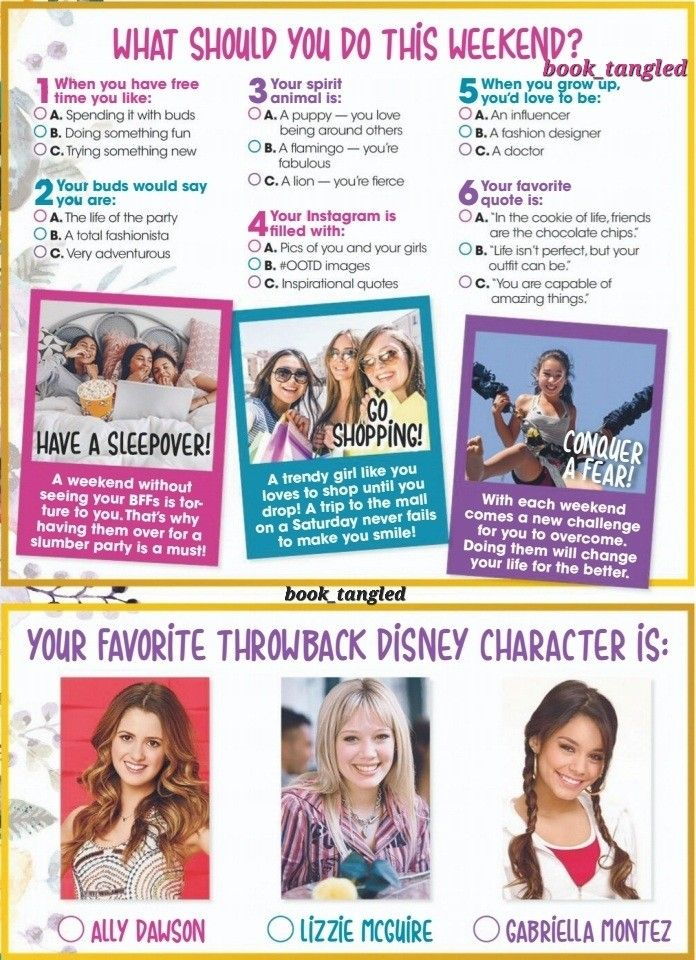
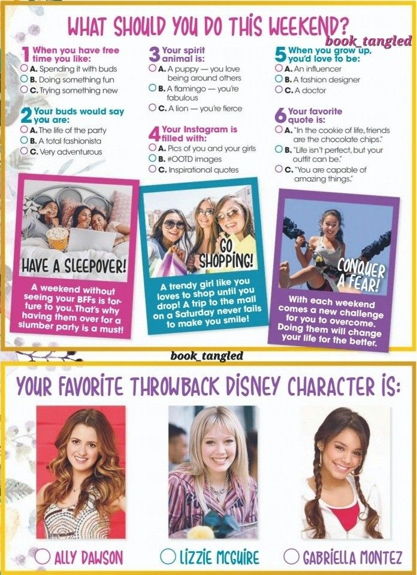
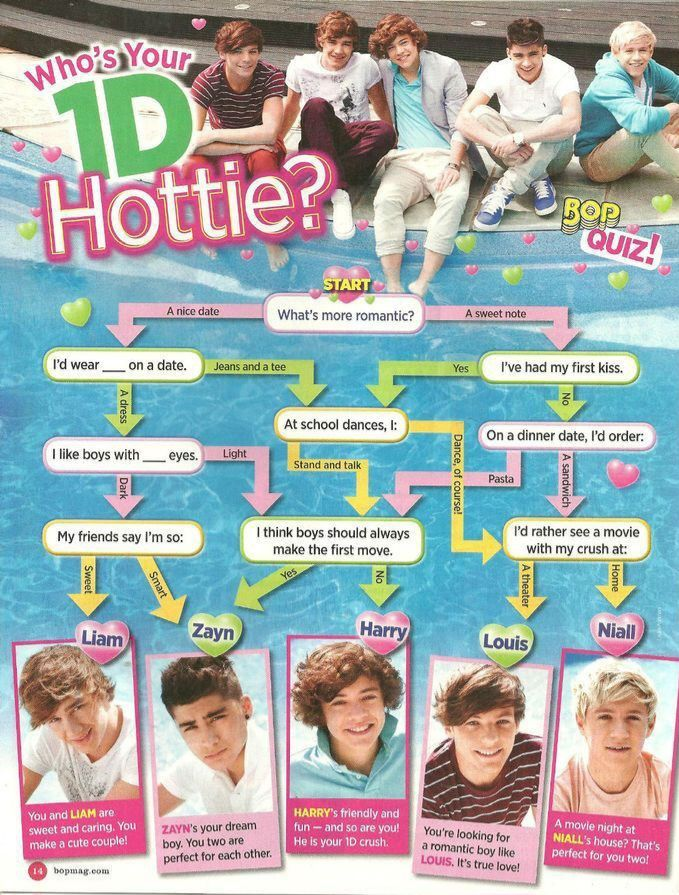
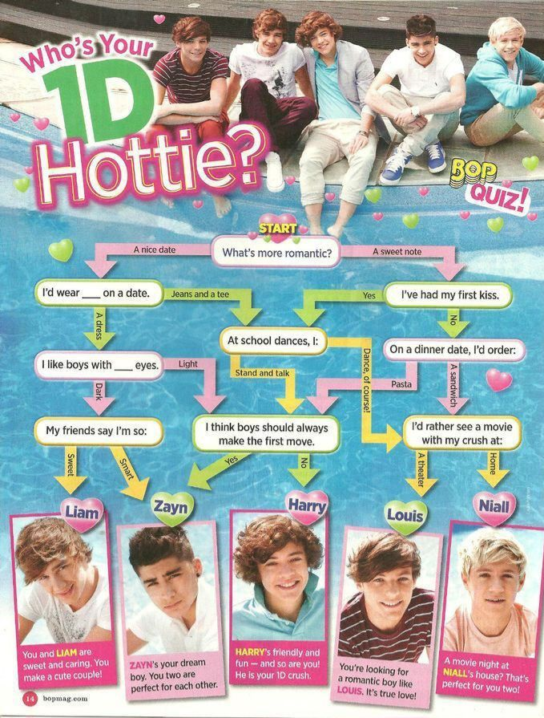
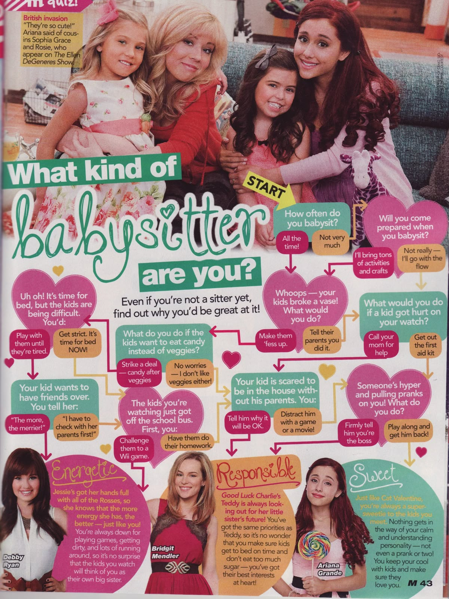

 

BREAKING: She’s Awake... Kind Of
The day begins with a symphony of chaos — five to ten alarms, each more desperate than the last, blaring every five minutes like a paparazzi flash. It’s not a wake-up call, it’s a tech-fueled battle for consciousness. And just like that, her digital day begins...

STYLE ALERT: Forecast First, Fashion Second
Before the glam, comes the glance at the weather app. Because obviously, a true icon doesn’t just hope for sweater weather — she checks. Rain? That’s a cozy-chic, sweatpants-and-slippers vibe. Sunshine? Time to serve jeans and a statement top. One swipe, and the wardrobe is decided. Tech meets trend, baby.
She’s Got Brains and a Schedule
Before stepping out into the world, she taps into her USFMobile app — because even icons need a reminder of where to be and when to show up.
Today’s agenda? Three classes, including a super exclusive PHYSICS LAB. That’s right — beauty, brains, and a Bunsen burner.
#SmartyPants #CampusQueen #ScientistButMakeItFashion
In true eco-legend fashion, she brushes her teeth with the sink off (because the planet matters, duh). The look? A throwback Hannah Montana tee, because brushing is better when you’re channeling your inner pop star.
BREAKING: No Coffee, Just Chai Vibes
She skips the basic coffee and goes straight for her gourmet leftover chai — because why settle for average when you can sip like a queen? Morning pick-me-up? Absolutely. The fridge is her trusty sidekick in this caffeine-free glow-up.
Soundtrack of the Day: Pop Royalty Edition Her playlist? Only the hottest tracks. Right now, it’s all about Sabrina Carpenter’s latest album — fresh, fierce, and totally binge-worthy. Oh, and don’t forget Olivia Dean bringing those soulful vibes. The perfect mix to power through her day like a true star.
Malia and I popped in to see Bassy at work and soak up the radio station vibes. He gave us a sneak peek of his architecture projects, but mostly we just loved hanging out and catching a break from the day.
Homework: The Ultimate Plot Twist
Time to face the not-so-glamorous side of the day — homework. It’s not her fave, but hey, a true star keeps that positive glow going. Most of the magic happens on her laptop, where she tackles assignments like a pro (or at least tries to).
She takes her lunch game seriously — armed with gadgets and a sprinkle of electricity, today’s culinary masterpiece is… gluten-free pasta! Because even a digital diva needs fuel that’s both stylish and smart!
No day’s complete without a serious scroll sesh. First up: Pinterest for all the inspo, then TikTok to catch the latest trends and maybe procrastinate a little.

Shell Yeah, It’s Taco Time!
Time to fire up the handy-dandy stove and whip up a dinner that’s as delicious as it is iconic. Because every queen deserves a meal that slaps.

After dinner, I’m all about multitasking — finishing homework while binge-watching Glee with my roommates. Honestly, who doesn’t love a little Kurt Hummel drama to keep things interesting?
Signing Off: Emails & Endless Fans
Winding down the tech marathon by tackling my inbox — replying to teachers, bosses, and of course, my ever-faithful fans. Because even stars have to keep up with their messages.
Step Check: Today’s Walk of Fame
Before calling it a night, she checks her steps — and wow, today was definitely active. When she’s not glued to screens, you’ll find her outside, owning the walk like the true star she is.